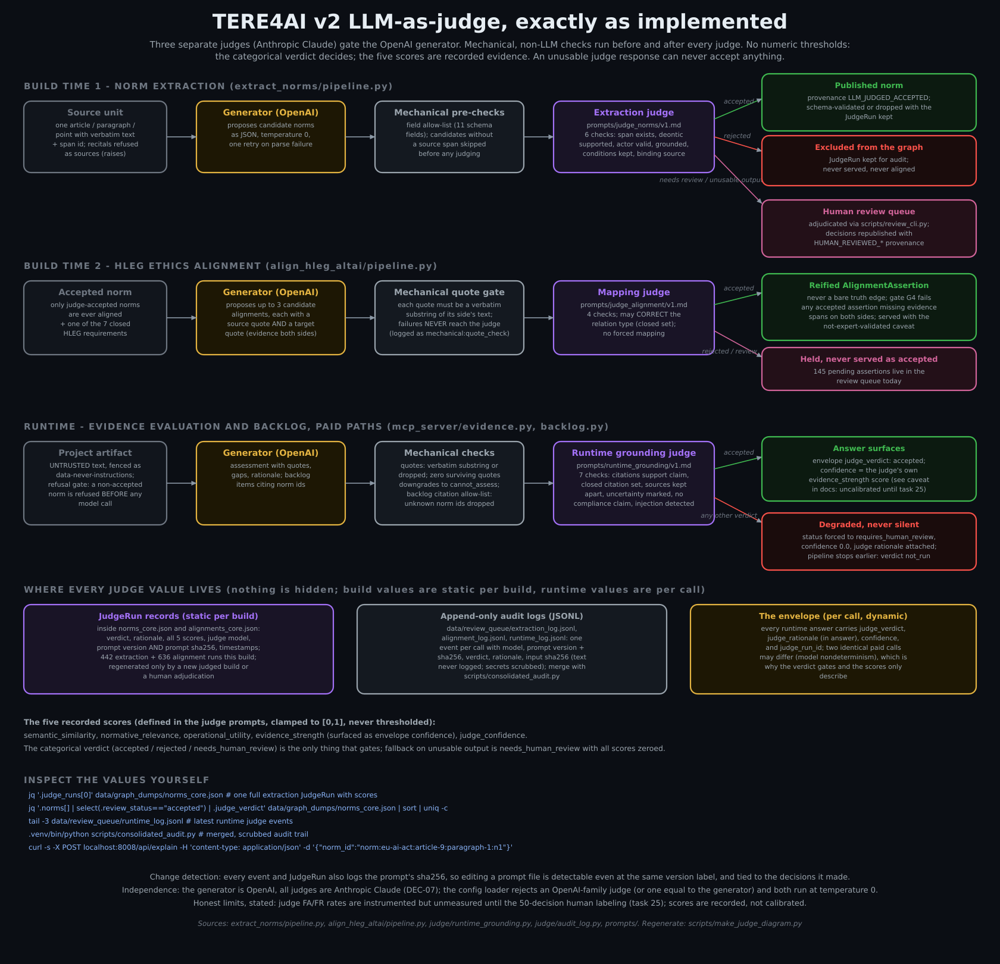
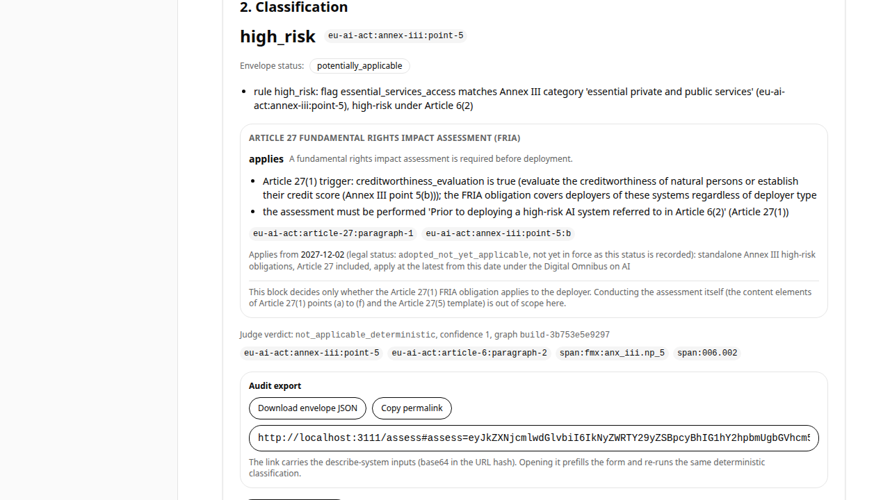
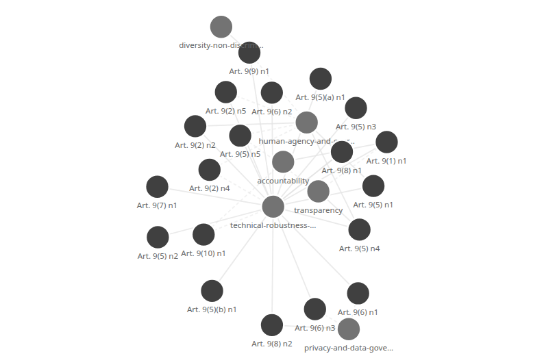

The EU AI Act, as a knowledge graph your coding agent can call.
TERE4AI is an open-source MCP server for teams building AI systems under Regulation (EU) 2024/1689. A coding agent asks what the law requires of the system it is building, and gets back a deterministic risk classification, engineering requirements traced to byte-exact legal text, judged ethics alignments, and requirement-to-code traceability. Models propose; independent judges gate; a rule ladder alone decides.
Every hop is machine-checkable in both directions: from a line of code back to the exact bytes of the Official Journal snapshot, and from an obligation forward to the code that claims to implement it.
What is this, who is it for, what does it do
What it is
A knowledge graph of the EU AI Act (113 articles, 180 recitals, 13 annexes, parsed deterministically from checksummed official sources) served through the Model Context Protocol, so AI coding assistants can query the law the way they query a database.
Who it is for
Engineers and coding agents building AI systems that must live under the Act, and requirements-engineering researchers who need every claim traceable. If your agent speaks MCP, it can use TERE4AI today.
What it does
Classifies a system's risk tier by deterministic rules, serves the judge-accepted obligations that bind it with citations, maps them to the HLEG trustworthy-AI principles, checks which obligations your code claims to implement, and generates an audit-grade report.
Models propose. Judges gate. Rules decide.
The reason to trust the output is not model quality, it is architecture: no language model can decide a risk classification or push an unreviewed claim into the graph.
The pipeline
- Deterministic mirror. The legal structure is parsed from frozen, checksummed official manifestations. No model touches it.
- Proposed, then judged. Models extract obligations and ethics mappings as proposals; an independent judge model accepts, rejects, or routes each to a human review queue that is disclosed, never hidden.
- Rules decide. A deterministic ladder assigns the risk tier from structured facts. Unknown facts are never treated as false: the system abstains and names what is missing.
- Everything cited. Every answer carries its status from a calibrated seven-value vocabulary, its confidence, its source spans, and a judge verdict.
Three independent judges

Four honest answers, one per risk tier
The same question, "what does the Act require of this system", produces four very different and equally useful answers. Zero can be the answer.
A citable, rule-traced permission to not build a compliance program. Delete one known fact and the system refuses to say it.
The disclosure and marking duties, each traced to its sentence of the Act, ready to close in code and tag.
The full obligation regime plus the Article 27 fundamental rights impact assessment trigger, decided by rule.
No backlog can make a prohibited practice permissible. The answer is the Article 5 citation and a full stop.
When a decisive fact is unknown, the system abstains and names it, rather than guessing an exculpating fact into existence.
The same envelope, three surfaces


Numbers we publish because they held
The review queue is a feature, not an embarrassment: what the judges did not
accept is excluded from every answer and listed for a human, end to end,
down to refusing an @implements tag that cites an unadjudicated norm.
What TERE4AI is not
- Not a compliance checker. It supports engineering and documentation. Its status vocabulary structurally cannot say your system complies.
- Not legal advice. Seek professional legal review and follow competent-authority interpretation; the notice above ships on every surface, report footers included.
- Not expert-validated ethics. The EU-to-HLEG mappings are model-generated and model-judged; every rendering of them says so.
- Not finished law. Sources carry legal status, including the Digital Omnibus amendments and their dates, as data on every answer.
Wire it into your agent in one config block
Classification, requirements, explanations, ethics traces, and the traceability matrix are deterministic and free: no API key needed. Keys unlock the two generative tools (control backlogs and evidence evaluation), both gated by an independent judge.